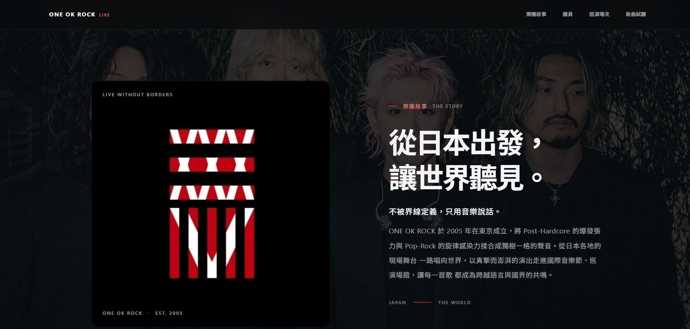
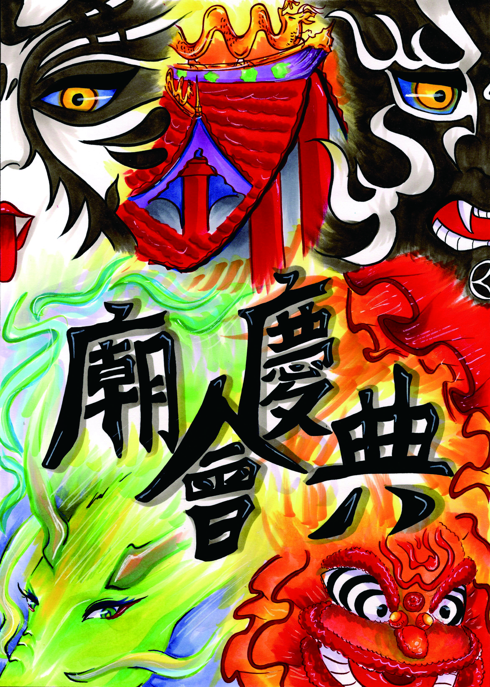
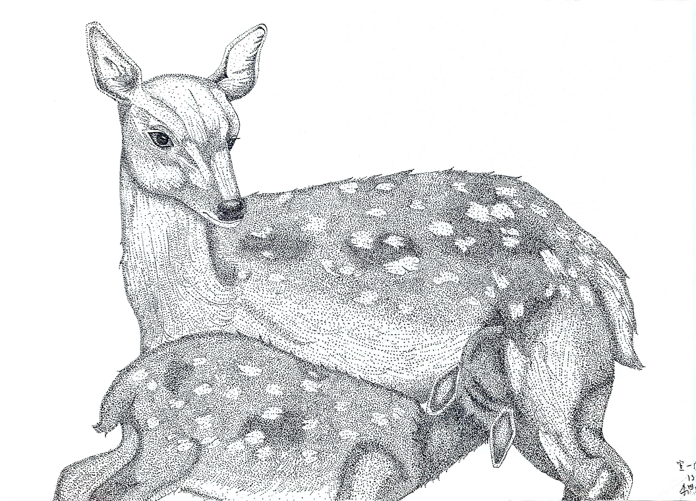
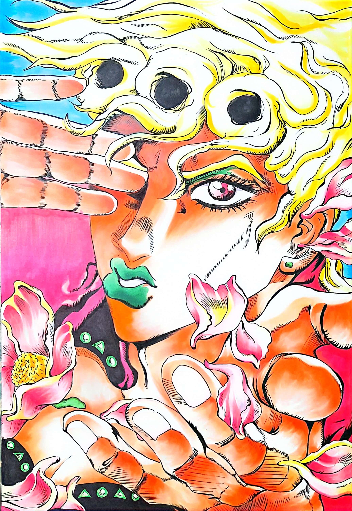

PROGRESS
從靈感開始，持續把點子變成作品。
AVAILABLE FOR NEW IDEAS
VISUAL ARTIST 視覚伝達設計
Turning curious ideas into bold, thoughtful digital experiences.
SCROLL TO EXPLORE01 — ABOUT ME 私について
我是李思璇，喜歡把靈感化為有溫度的數位體驗。 從視覺細節到互動邏輯，我享受持續探索、動手實驗， 再透過一次次打磨，讓每個想法真正成形。
保持好奇，勇於嘗試，
MY CREATIVE MINDSET
讓每一次創作都更靠近理想。
從靈感開始，持續把點子變成作品。
樂於探索新工具、新技術與新可能。
用不同角度觀察，讓創意找到新出口。
重視每個細節，也在意使用者的感受。
02 — SKILLS & TOOLKIT スキル
從數位創作到手作媒材，持續練習、探索並累積作品。
以鮮明色彩和俐落筆觸，為靈感注入個性。
MARKER ART用細膩的點與層次，慢慢堆疊畫面質感。
DOT DRAWING建構空間、材質與燈光，呈現立體視覺想像。
BLENDER / 3DS MAX剪接畫面與節奏，將片段編織成完整故事。
PREMIERE / CAPCUT03 — SELECTED WORK ポートフォリオ
插畫、麥克筆海報與數位作品
每一件都是一場新的實驗。

Apple 簡約暗黑風樂團專屬網站，包含樂團故事、團員卡片、巡演場次與新曲試聽。
以光線、材質與生活物件構成的桌面場景渲染。

以麥克筆鮮明色彩描繪熱鬧節慶與傳統意象。

以細緻點描堆疊鹿身紋理與林間靜謐氛圍。

動漫角色手繪練習，著重神情、線條與個性刻畫。
剪輯濟州島旅途片段，記錄風景與旅行日常。
04 — OFF THE GRID 好きなもの
Beyond Design - 關於我的音樂、動漫與日常靈感
LOUD HEART, LIVE LOUDER
熱愛 Alternative Rock 另類搖滾，是 ONE OK ROCK 的忠實樂迷。 享受現場演唱會的震撼，也從音樂中汲取創作靈感；J-POP 與 K-POP 也在我的播放清單裡。
BOLD LINES, BIG WORLDS
熱衷追蹤各類精緻的 serialized 漫畫，從人氣韓漫《JINX 魔咒》， 到《JOJO 的奇妙冒險》、《航海王》與《咒術迴戰》，享受每個風格鮮明的世界。
COLLECT MOMENTS, MAKE STORIES
喜歡用鏡頭捕捉日常片刻，透過影像記錄觀察到的風景與故事。